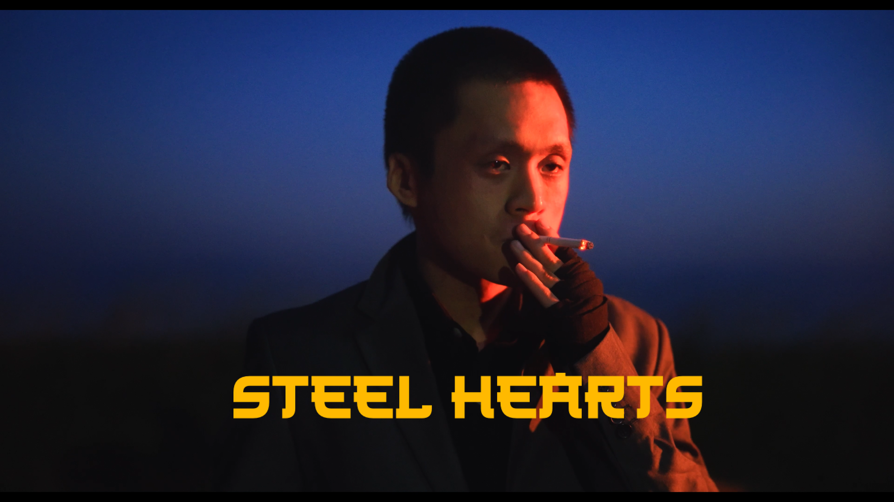
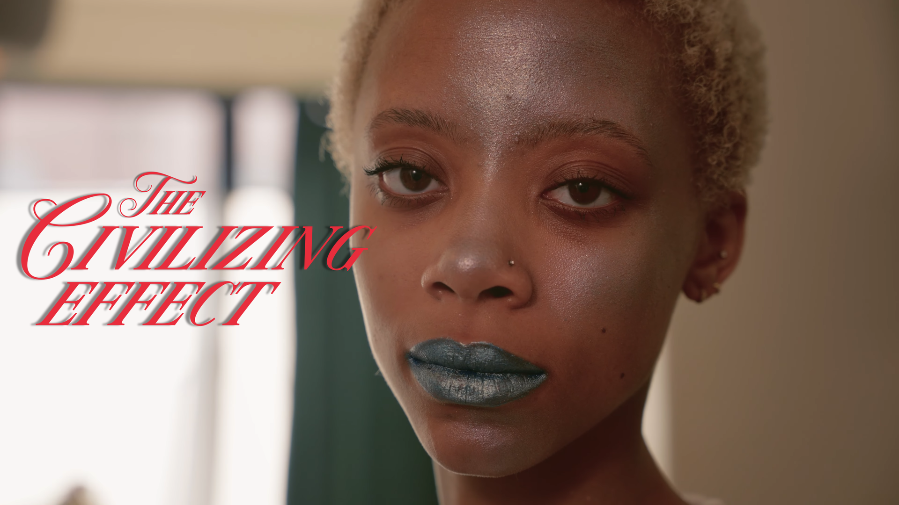
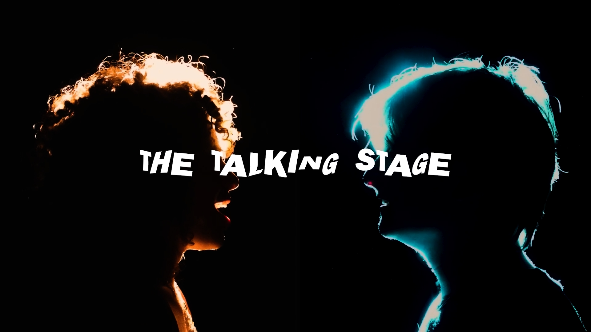
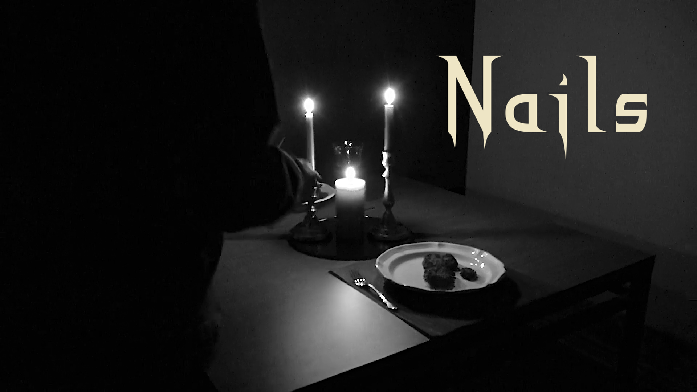

Ethan Smith Production Reel
Looping cut of production, directing, camera, and editing work.
Contact
Filmmaker / Founder / Builder
I move between production sets, design systems, startup ideas, and code with the same goal: make things that feel useful, memorable, and human.
Looping cut of production, directing, camera, and editing work.

Executive Producer, Script Supervisor, 1st AD, and 2nd AC.

Writer, Script Supervisor, and 1st Assistant Camera.

Writer, Director, Cinematographer, Actor, and Editor.

Writer and Set Designer.

Creative direction, photography, editing, and graphic design.
Focused Case Study
Limer / Full-Stack App In Progress
Limer is a social app built around the college experience. Instead of clubs, events, group chats, and recap posts living in separate places, Limer brings them into one campus ecosystem so students can discover what is happening and keep the conversation moving.
Campus life can feel fragmented. Events are promoted in one place, group chats happen in another, and memories disappear after the night ends. The product challenge is making social discovery feel organized without making it feel corporate.
I designed around event discovery, RSVP behavior, club identity, direct messages, group chats, profile presence, and recap posts. The app combines UX writing, product architecture, React Native implementation, Supabase data modeling, auth, storage, and iterative design.
Limer shows my ability to think like a founder and a builder at the same time: shape the product idea, design the user flows, write the interface language, and build toward launch.


496 Gym / Responsive Website Concept
496 Gym needed a modern website concept that could communicate its energy, class schedule, memberships, events, and community feel. The work began with real gym assets and evolved through repeated design critique, content restructuring, and front-end implementation.
The experience needed to feel premium and alive while still being clear for prospective members, current members, staff, and older visitors who needed familiar navigation patterns.
I organized the site around membership discovery, class information, schedule access, event storytelling, staff tasks, and account actions. The prototype used real class names, membership details, event imagery, brand colors, and responsive front-end logic.
This case study shows UI/UX iteration, information architecture, responsive design, JavaScript-driven content, brand translation, and the discipline to reduce visual ambition until the user experience is easier to follow.


Flatline Pest Technology / Live Business Website
Flatline Pest Technology is a real pest control business in Trinidad and Tobago. I helped turn the business context into a live website that explains services clearly, builds trust, and makes it easier for customers to request help.
Pest control customers often arrive with urgency and uncertainty. The site needed to make WhatsApp, phone, and inspection actions obvious while still explaining training, insurance, warranties, service categories, and inspection limitations.
I started with stakeholder questions, then structured the site around lead generation, service education, mobile contact paths, trust signals, local SEO, and a clear inspection request flow. The build was deployed through GitHub and Cloudflare Pages.
Flatline shows practical product thinking: interviewing a client, translating needs into content and UX decisions, designing for older and urgent users, launching with a custom domain, and making small details serve the business goal.
Visit Live Site


Awards
Leadership
Education
Experience
Skills